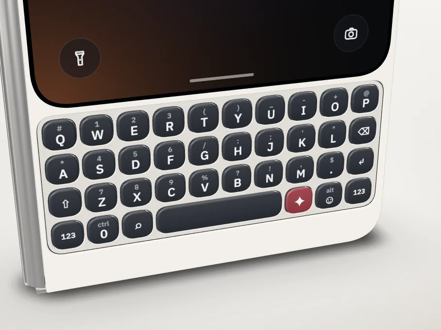
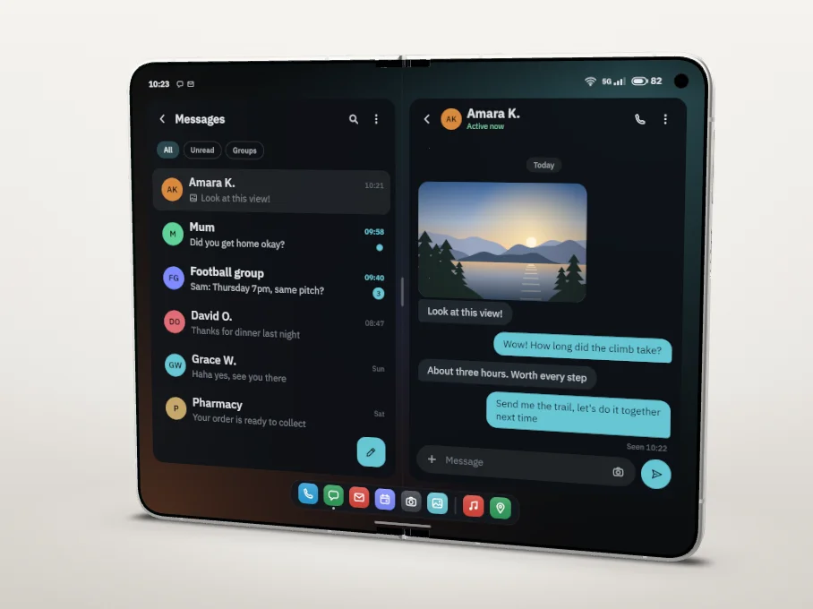
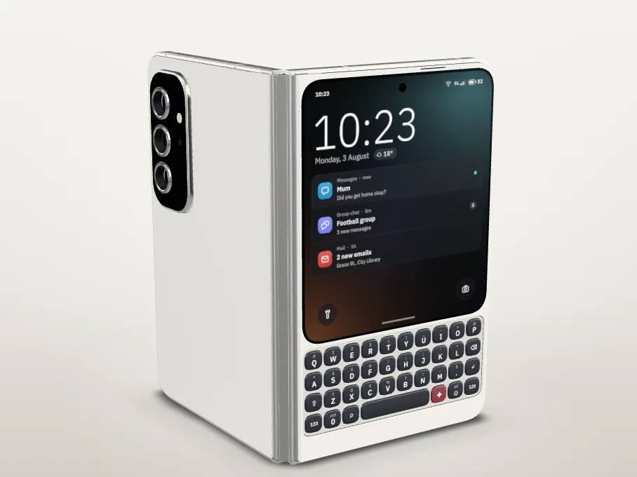
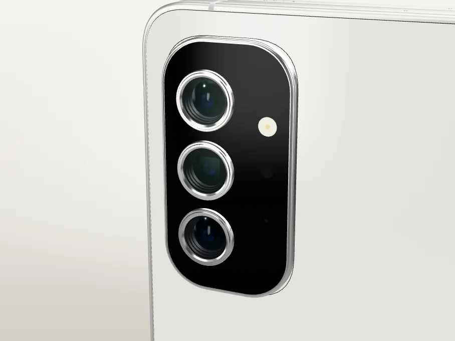
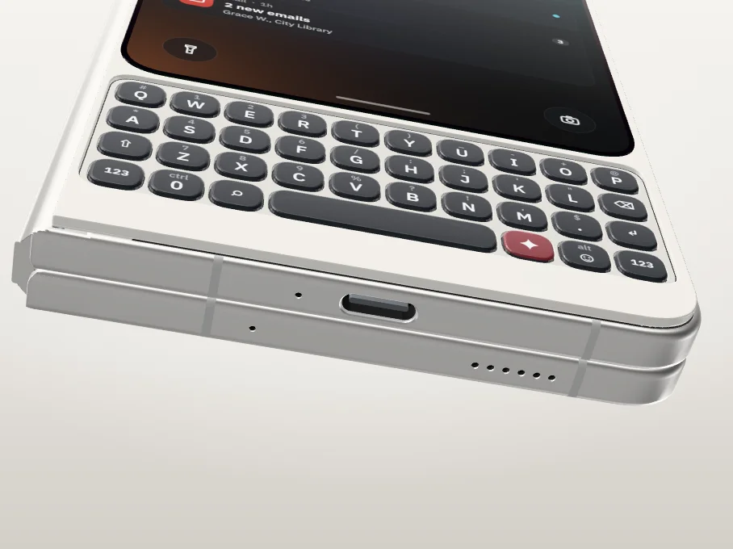

A design concept
Two devices. One pocket.
Fold Communicator is a design concept for a possible phone.
Shut, it is a compact phone with a real keyboard.
Open, it is a big screen for reading, writing and working.
Keyboard
Type like you mean it.
37 backlit keys with a real click.
Each key moves 0.3 mm and clicks on a metal dome, so you feel every press.
The keys sit just below the face of the phone, so a pocket or a table top does not press them.
The keys are touch-sensitive too. Swipe across them to scroll.
Above them, a 4.2-inch screen shows replies at a glance.

Inner screen
Open it up.
Unfold it, and the two halves become one 7.5-inch screen.
Two apps fit side by side: messages on one half, a document on the other.
It is sharp: 2364 × 1902 pixels, about 403 to the inch.
It is smooth: up to 120 frames a second when you scroll, down to one a second on a still page to save power.
Up to 3,000 nits keeps it readable in sunlight. Ultra-thin glass covers it.

Hinge
Folds flat. Shuts without a gap.
Each half turns on its own pivot, so the phone shuts flat with no gap between the halves.
Inside the hinge, the screen curls into a soft loop instead of a hard crease.
It holds any angle you leave it at, from shut to open flat.

Cameras
Three cameras. One for every shot.
A 200 MP main camera, built for low light.
Its large 1/1.4-type sensor gathers more light, and optical stabilisation steadies the shot.
A 50 MP 3× zoom for portraits and far-off detail.
A 50 MP ultra-wide for rooms, groups and views.
8K video at 60 frames a second.
A 20 MP selfie camera on each screen, for calls with the phone shut or open.
The big main sensor needs depth. The phone is 15.5 mm thick at the camera.

Battery and chip
All day, and then some.
About 6,830 mAh in two cells, one in each half, so the weight balances in your hand.
Silicon-carbon cells hold more charge in the same space.
80 W wired charging. 50 W wireless.
It is designed around the Snapdragon 8 Elite Extreme Gen 6, built on a 2 nm process.
It is designed for 12 GB of memory with 256 GB of storage, or 16 GB with 512 GB.

Teardown
Take it apart.
Every part is modelled. Lift the back off, pull the screens, or explode the whole phone. Tap any part to see what it does.
Under Options, High detail shows every small piece in the exploded view. Screen hand-over animation passes the picture between the screens as the phone opens.
Full parts listevery part, what it does, and its size
| Part | What it does | Size (mm) |
|---|
Sizes are width × height × depth in millimetres, as placed in the model.
Finishes
Five finishes.
Porcelain, Graphite, Sage, Clay and Cobalt. Tap one to see it on the phone above.
In detail
Tech specs
| Size | |
|---|---|
| Folded | 78.4 × 123.9 × 12.5 mm (15.5 mm at the camera) |
| Open | 153.0 × 123.9 × 7.0 mm |
| Screens | |
| Inner screen | 7.5-inch LTPO OLED. 2364 × 1902, about 403 ppi. 1–120 Hz. Up to 3,000 nits. Ultra-thin glass. |
| Cover screen | 4.2-inch LTPO OLED. 1106 × 1269, about 403 ppi. 1–120 Hz. |
| Keyboard | |
| Keys | 37 backlit keys. Touch-sensitive: swipe across them to scroll. |
| Feel | 0.3 mm travel on metal domes. The keys sit just below the face of the phone. |
| Chip and memory | |
| Chip | Snapdragon 8 Elite Extreme Gen 6. 2 nm. Eight cores, up to 5.0 GHz. |
| Memory and storage | 12 GB + 256 GB, or 16 GB + 512 GB. LPDDR6 memory, UFS 5.0 storage. |
| Cameras | |
| Main | 200 MP, 1/1.4-type sensor, f/1.7, optical stabilisation |
| Zoom | 50 MP, 3× optical (periscope) |
| Ultra-wide | 50 MP |
| Selfie | 20 MP on the cover screen. 20 MP in a punch-hole on the inner screen. |
| Video | 8K at 60 fps. 4K slow motion at 240 fps. |
| Battery and charging | |
| Battery | About 6,830 mAh (about 26.6 Wh) in two silicon-carbon cells: 2,917 + 3,913 mAh |
| Charging | 80 W wired. 50 W wireless. Reverse wireless charging. |
| Connectivity | |
| Wireless and ports | 5G, Wi-Fi 7 (Wi-Fi 8-ready), Bluetooth 6.3, UWB, NFC, USB-C 3.1 Gen 2 (10 Gbps) |
| SIM | eSIM. No SIM tray. |
| Sound and security | |
| Speakers and mics | Two speakers at opposite corners, for stereo in any position. Five microphones. |
| Unlock | Fingerprint sensor in the power key |
| Build | |
| Frame | Aluminium, with steel hinge parts |
| Glass | Toughened glass on the back and the cover screen. Ultra-thin glass on the inner screen. |
| Design targetswhat the design aims for, not test results | |
| Weight | About 250 g |
| Water and dust | IP48 water and dust resistance. It keeps out objects bigger than 1 mm and can take a dip in fresh water. |
Dimensions
Open, it is about 7.0 mm thick on the keyboard half, whose raised face plate adds 1.25 mm. The screen half is 5.7 mm.